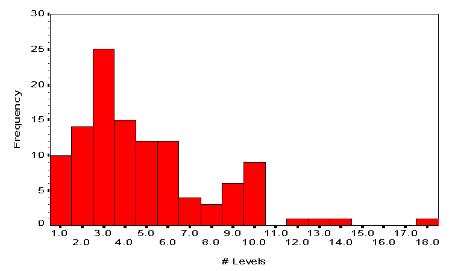

Internal Labor Markets in Internet Multi-User DomainsABSTRACTInternal labor markets enable organizations to shield their higher-level jobs from competition with other organizations. The hypothesis that internal labor markets reduce competition in management hierarchies is examined using data from administrative hierarchies of multi-user domains (MUDs), internet virtual-reality systems. High-level administrators of 115 MUDs were asked how much they saw their MUD as competing with other MUDs for administrators, as well as a number of questions about the administrative structure of their MUD. A larger difference between the proportion of lowest-level administrators and the proportion of first-time administrators (a measure of the existence of an internal labor market) was associated with lower perceptions of competition for administrators. INTRODUCTIONIn their pioneering work on internal labor markets (ILMs), Doeringer and Piore (1971) suggest that an important feature of ILMs is their ability to shield jobs from market competition. Movement from the external to the internal labor market occurs at ports of entry, particular jobs which are filled from the external labor market. For example, all employers compete on the external labor market for entry-level jobs, but those with ILMs do not compete with other employers to fill higher-level positions, but adhere to a policy of promotion from within. As this reduces the costs of identifying job candidates for these positions, the employer can afford to pay slightly higher wages. Employees may similarly favor ILMs both because they need not compete with outsiders for promotions, and because, consequently, they may receive those higher wages. In volunteer organizations, where wages are not at issue, ILMs may serve a more psychological function. When outsiders are introduced into an organization at higher levels, the morale of lower-level insiders who anticipated the recognition represented by a promotion may suffer, and may have repercussions on productivity. The existence of an ILM may promote insider morale and loyalty. While much has been written about MUD players (see, for example, Turkle, 1995), comparatively little has been said about administrators, the people who run MUDs. MUDs require considerable time and energy to maintain; in the data set described below, the median number of administrators per MUD was 10, and one MUD had as many as 74. These administrators are often organized into hierarchies of authority levels, with lower-level administrators reporting to and supervised by higher-level administrators. Because almost all MUDs are freely accessible, and have no sources of funding, administrators are rarely paid for their time. On the surface, then, the administrations of MUDs have many of the features of internal labor markets in volunteer organizations. In earlier work, Schwartz (Schwartz, 1996) investigated the effects of population density on the survival chances of MUDs between 1991-1993. Consistent with the literature on population ecology (Hannan & Carroll, 1992), he found that a larger population of MUDs at the time a focal MUD is founded decreased the focal MUDs probability of survival. However, larger populations of MUDs after founding increased the focal MUDs probability of survival. One hypothesis consistent with these findings is that new MUDs initially face both weak helpful and strong competitive forces from other MUDs, but once established, MUDs shield themselves from competition. This study examines a narrower version of this hypothesis. At their founding, all MUDs compete for administrators, and a larger population of MUDs means greater competition. MUDs which establish internal labor markets, however, face less competition after founding. That is, MUDs which have stronger internal labor markets should compete less for administrators, ceteris paribus. DATAThe data are from a January 1997 survey of administrators of publicly-accessible internet MUDs. The population was sampled from administrative contact addresses listed on The MUD Connector (Cowan, 1997), the largest list of MUDs available and the only list which provides such addresses. Attempts were made to contact all 588 administrative contacts listed; 115 (20%) provided usable data. In almost all cases, the respondents were the highest-level administrators of the MUDs. Competition -- The primary dependent variable is a rating of how much the respondent sees their MUD as competing with other MUDs for administrators, on a 5-point Likert scale. This measure suffers from the usual limitations of self-reports, including potential social desirability bias, but it is unclear how one would obtain a more direct measure of how much the MUD competes for administrative talent. Evidence of ILMs -- Three variables are indirect measures of the existence of internal labor markets. First is the log of the number of administrative levels on the MUD. While not a necessary or sufficient condition for an internal labor market, multiple administrative levels are often characteristic of an ILM. Second is the existence of formal training for administrators, such as apprenticeships, handbooks, or lectures. Again, an ILM need not require formal training, but if the MUDs high-level administrators anticipate that its newer administrators will make careers there, they can provide such training at a lower risk of losing the new administrator and wasting the time spent in training. Training requirements often drive the existence of ILMs, as they inherently shield jobs from outside competitors who lack the specific skills inculcated in insiders. The third measure of the strength of internal labor markets requires more explanation. Assume a MUDs administrative hierarchy is a pure internal labor market, with a single port of entry, at the lowest-level administrative position. In this case, all of the MUDs adminstrators who are in their first administrative position on the MUD should be in these lowest-level positions; no one should be hired directly into a higher-level position. If 33% of the MUDs administrative positions are at the lowest level, no more than 33% of the MUDs administrators should be in their first position on the MUD. A MUD with a weaker ILM might have 40% of the administrators in their first position; one with no ILM at all might have as many as 100% of the administrators in their first position. MUDs might also have only 10% of their administrators in their first position: this implies that the other lowest-level administrators were either demoted to the lowest-level or transferred from one lowest-level position to another. The third measure of strength of ILM, then, is the difference between the percentage of administrators at the lowest level of administration and the percentage of administrators for whom this is their first administrative position on the MUD. This variable, which could range from -100% to +100%, measures the strength of the port of entry, and is perhaps most directly indicative of an ILM; it is, however, an indirect difference measure, and likely to have a larger measurement error than the other variables.[1] More "direct" measures, such as asking the highest-level administrator about the number of administrators of various levels who had worked at other MUDs before the focal MUD, or number of administrators per year who leave to accept positions of various levels at other MUDs were rejected as likely to be difficult or impossible to elicit reliably. They rely on information that the respondent would be unlikely to know or remember and require considerable work on the respondent's part as they are conditional on number of administrative levels and number of administrators per level. Demographic measures -- Two demographic measures seem relevant to perceptions of competition: the log of the age of the MUD in months, and the log of the size of the MUD in rooms. Logs were used for these (and the second ILM measure discussed above) because the unlogged measures are extremely skewed; for example, a few MUDs had over 100,000 rooms. Logged variables give a natural sense of the order of magnitude of the MUDs age, size, and number of administrative levels. In addition, log age squared and log rooms squared were entered into the analysis to detect nonlinear effects of age and size. MUD type dummies -- Because experience on one type of MUD is generally transferable only to another MUD of the same type, five MUD type dummies are introduced to examine intratype effects.[2] Medians, means, and standard deviations for the variables are presented in table 1. TABLE 1: DESCRIPTIVE STATISTICS +----------------------------------+------+------+-------+---+ |Variable |Median|Mean |SD |N | |----------------------------------+------+------+-------+---| |Competition for administrators |1 |1.48 |1.10 |115| |Number of administrative levels |4 |5.33 |5.64 |115| |Log(levels) |0.60 |0.61 |0.31 |115| |Does the MUD offer formal training|1 |0.55 |0.50 |114| |for administrators? | | | | | |% lowest-level administrators - |0 |2.78 |39.94 |97 | |% first-time administrators | | | | | |MUD age, in months |18 |23.94 |21.05 |115| |Log(age) |1.26 |1.19 |0.45 |115| |Log(age) squared |1.58 |1.62 |0.99 |115| |Number of rooms |4,193 |44,254|387,502|107| |Log(rooms) |3.62 |3.51 |0.71 |107| |Log(rooms) squared |13.12 |12.82 |5.07 |107| +----------------------------------+------+------+-------+---+ THE PREVALENCE OF ILMSHow prevalent are the features which I have identified as indicating an internal labor market in a MUD? Figure 1 shows a histogram of the number of administrative levels in the MUDs in the sample. One MUD, which reported 55 levels of administration, is not shown. Clearly, the MUDs in the sample organize their administration into hierarchical levels; only 9% of the MUDs reported using no hierarchy, and an additional 12% reported a two-level hierarchy (often a single owner of the MUD and a group of equal administrators beneath).Figure 1: Histogram of number of administrative levels in the surveyed MUDs. Formal training was given to administrators in 55% of the MUDs who responded. Finally, MUDs varied widely in the difference between percent of lowest-level administrators and percent of first-time administrators. The difference varied from nearly -100 (essentially all founders of the MUD) to nearly 100 (all administrators at the second-to-lowest level, all of whom had been promoted from the lowest level, and no one currently at the lowest level.) Table 2 presents correlations between the main variables. While the correlations between competition for administrators and the ILM measures are all in the predicted (negative) direction, only % lowest-level - % first-time correlates significantly. More administrative levels is associated with a greater likelihood of providing formal training, and log(rooms) and log(age) are, not surprisingly, positively correlated. Interestingly, % lowest-level - % first-time was also negatively correlated with log(rooms); the smaller the MUD, the larger the proportion of lowest-level administrators relative to the proportion of first-time administrators. This may occur because smaller MUDs tend to have flatter hierarchies in which nearly everyone is a lowest-level administrator, but administrators change positions within the lowest-level, so few are in their first administrative role on the MUD. TABLE 2: CORRELATIONS RESULTSTable 3 presents the results of two linear regressions predicting competition for administrators from the variables described above. The second regression includes dummies for MUD types; its coefficients estimate the intratype effects of the parameters. TABLE 3: REGRESSIONS PREDICTING COMPETITION FOR ADMINISTRATORS +---------------------------------------+----------------+----------------+ | |Across MUD Types|Within MUD Types| |Log(Age) |0.19 |0.25 | | |(1.03) |(0.99) | |Log(Age) squared |-0.19 |-0.32 | | |(0.46) |(0.45) | |Log(Rooms) |0.41 |0.65 | | |(0.67) |(0.67) | |Log(Rooms) squared |-0.08 |-0.09 | | |(0.09) |(0.09) | |Training |-0.24 |-0.26 | | |(0.24) |(0.23) | |Log(Levels) |-0.31 |0.05 | | |(0.40) |(0.41) | |% Lowest-level - % First-time |-0.007* |-0.008* | | |(0.003) |(0.003) | |Number of MUD type dummies |0 |5 | | SD(coefficient on MUD type dummies)| |0.750 | | F-test | |2.31 | |R-squared |0.105 |0.240 | |F-test |1.36 |2.01* | |N |89 |89 | +---------------------------------------+----------------+----------------+ Note: Standard errors are in parentheses. * Statistically significantly different from zero at the 5% level The large number of variables relative to the sample size prevents either the first regression or the dummies in the second regression from having a significant F-statistic. Nevertheless, the regressions have a number of interesting features. First, 11% of the variance in perceived competition for administrators is captured by the demographic and ILM measures. An additional 13% of the variance is accounted for by the dummies for MUD type.[3] The only significant predictor of perceived competition was the difference between the proportion of lowest-level administrators and the proportion of first-time administrators. This effect was robust both within and across MUD types. Other potential indicators of internal labor markets, the number of administrative levels and the existence of formal training, did not significantly affect perceived competition; however, as noted at the outset, these factors, though associated with ILMs, are not necessary or sufficient conditions for the existence of an internal labor market. The failure to find other effects and the generally low level of fit may be due to the limited variance in perceived competition. 77% of the respondents rated their MUDs level of competition as 1 (no competition at all), and 14% as 2. In light of this limited variance, it is perhaps even more notable that the difference between the proportion of lowest-level administrators and the proportion of administrators currently in their first position on the MUD was a robust and significant predictor. DISCUSSIONI find, then, that the presence of internal labor markets in MUDs may be associated with less perceived competition for administrators. This effect was statistically reliable both across different types of MUD and within MUD types. In general, internal labor markets may serve valuable functions even in volunteer organizations which do not pay wages. Although the results of this study are suggestive, a number of limitations must be noted. First, the variance of the main dependent variable, perception of competition for administrators, is lower than ideal. This could simply reflect a lack of competitiveness in this area for most MUDs, but could also be a symptom of a response bias -- perhaps the administrators who see themselves in heavy competition have more important things to do than respond to surveys. They could also be the result of attempts to respond in a socially desirable fashion; as it is extremely difficult to measure competitive behavior, it is unclear how well the self-reports actually describe the behavior. The % lowest-level - % first-time variable, the measure of the degree of internalization of the MUDs labor market for administrators, is a significant predictor of perceived competition, but its effect is relatively small, again perhaps due to the limited variance in perceived competition. Moreover, as this is a correlational design, I can not distinguish whether precisely those administrators who see themselves in competition are those who choose to establish internal labor markets, or whether the existence of internal labor markets reduces the perceived competition. Causality could be established with a longitudinal study design; this studys primary contributions are to show that an association exists and to highlight a less common organizational population which merits further study. ENDNOTESAndrew Cowan at The MUD Connector was helpful in acquiring the contact addresses for the MUD administrators surveyed in this project. I am particularly indebted to the administrators themselves, who were often extremely forthcoming in providing information about their MUDs, Richard Bartle, who served as editor for this manuscript for the Journal of MUD Research, and two anonymous reviewers. A version of this paper was originally presented as a final paper in a graduate seminar in Industial Relations at the University of California, Berkeley. [1] A more interpretable alternative measure might be the ratio of the two proportions rather than their difference. However, the ratio is monotonically related to the difference, and presents a number of mathematical difficulties: notably, the presence of [0]% values in the denominator result in undefined ratios, and ratios in general are highly skewed. [2] The five MUD types represented by the dummies were variants of Dikumud, LPmud, Abermud, MUSH/MuX, and other Tiny-type MUDs. [3] Most of this effect can be attributed to the dummy for "other Tiny-type MUDs". Post-hoc tests revealed that these 8 MUDs had significantly higher perceived competition scores than any other type of MUD (LSD test, p<.05). REFERENCESCowan, A. (1997 Jan 9) The MUD Connector, extended database. Availableon-line: http://www.mudconnect.com Doeringer, P. B. and Piore, M. (1971). Internal Labor Markets and Manpower Analysis. Lexington, MA: Heath. Hannan, M. T. and Carroll, G. R. (1992). Dynamics of Organizational Populations. New York: Oxford University Press. Schwartz, A. (1996). Competition and MUD Failures. Journal of MUD Research, 1(1). Available on-line: Turkle, S. (1995) Life on the screen: Identity in the age of the internet. New York: Simon and Schuster. |